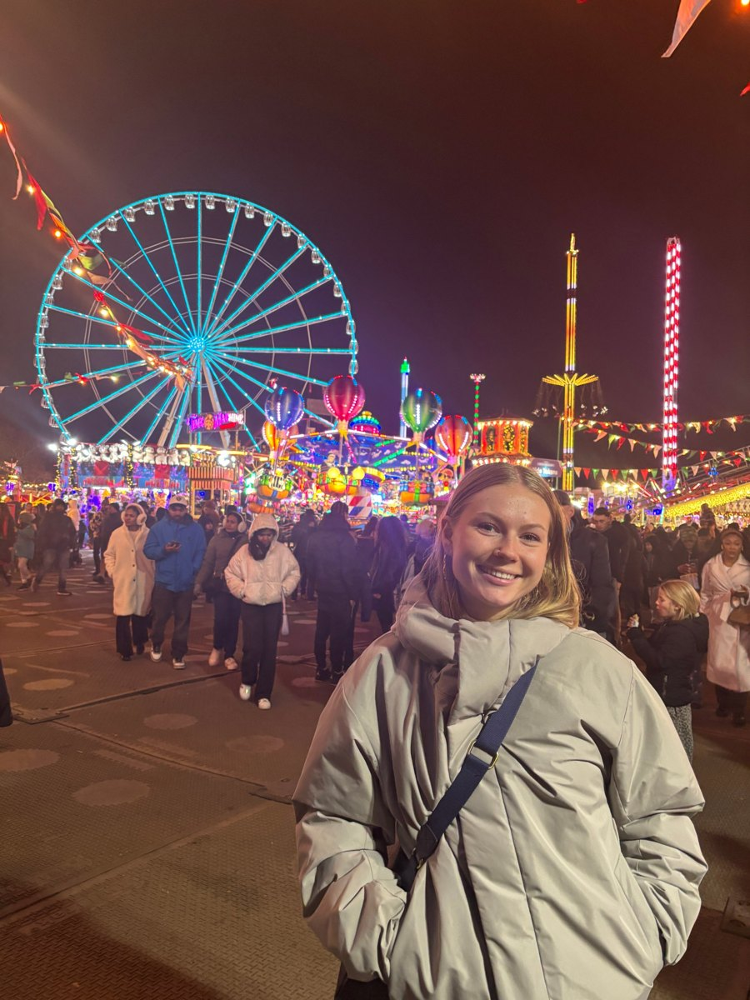
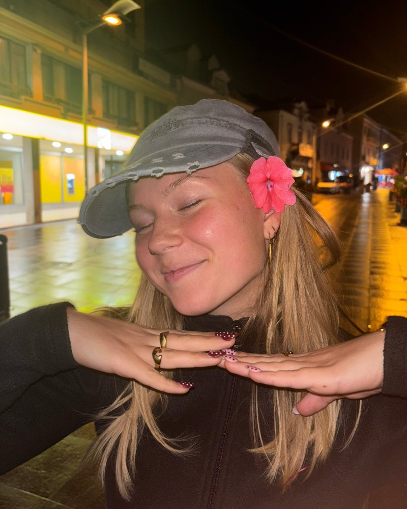

Event & festival productionEvent- og festivalproduktion
From booking and contracts to building the site and running stages on the day.
Fra booking og kontrakter til opbygning af området og afvikling af scener på dagen.
ProofErfaring
Project portfolio · Kaospilot, Team 31Projektportefølje · Kaospilot, Hold 31
Event producer / Community builder / Systems thinker
Eventproducent / Fællesskabsbygger / Systemisk tænker
I founded and lead a pop-up concert concept, coordinate festivals and events, and work with how organisations are built. I'm looking for an internship in culture, events or regenerative organisations.
Jeg har stiftet og leder et pop-up koncertkoncept, koordinerer festivaler og events og arbejder med, hvordan organisationer bygges. Jeg søger praktik inden for kultur, events eller regenerative organisationer.
All access2027

From booking and contracts to building the site and running stages on the day.
Fra booking og kontrakter til opbygning af området og afvikling af scener på dagen.
Starting things from zero and giving them structure, purpose and a community that stays.
At starte noget fra bunden og give det struktur, retning og et fællesskab, der bliver.
Mapping how structures, relations and narratives shape culture, and finding the root causes.
At kortlægge, hvordan strukturer, relationer og fortællinger former kulturen, og finde grundårsagerne.
Grant applications, budgets, contracts, permits and the admin that keeps a project legal and alive.
Fondsansøgninger, budgetter, kontrakter, tilladelser og den administration, der holder et projekt lovligt og levende.
Scripting, filming and editing video, finding a tone of voice and writing in Danish and English.
Manus, optagelse og klipning af video, at finde en tone of voice og skrive på dansk og engelsk.
Leading teams under pressure, running processes and assessing people fairly.
At lede teams under pres, styre processer og vurdere mennesker fair.
I design in Figma and Canva, build systems and databases in Notion, and use AI to speed up research, writing and planning in any project.
Jeg designer i Figma og Canva, bygger systemer og databaser i Notion og bruger AI til at gøre research, skrivning og planlægning hurtigere i ethvert projekt.
Main project · Founder · Since May 2025Hovedprojekt · Stifter · Siden maj 2025
Amplify Live is a non-profit association in Aarhus that gives emerging artists an intimate stage, professional live video and a way into the music industry.
I started the project in May 2025 and lead it today. It runs entirely on foundation grants. Building it has taught me how the music industry works from the inside, and what it takes to keep a volunteer-driven community going.
Amplify Live er en non-profit forening i Aarhus, der giver nye artister en intim scene, professionel livevideo og en vej ind i musikbranchen.
Jeg startede projektet i maj 2025 og leder det i dag. Det drives udelukkende af fondsmidler. Arbejdet har lært mig, hvordan musikbranchen fungerer indefra, og hvad der skal til for at holde et frivilligt fællesskab kørende.
Artists includeArtister bl.a. ANBEROSE · SOPHUS · CHÆK · MONSUN · Lygtevenner
What artists getDet får artisterne
Pick a card to open the project.
Vælg et kort for at åbne projektet.
Kulturmødet, Mors
I was responsible for part of the youth programme at Kulturmødet, the national culture festival on Mors. I found and hired the acts, handled their contracts and needs, built the physical festival space and ran the schedule and stages during the festival.
Jeg var ansvarlig for en del af ungeprogrammet på Kulturmødet på Mors. Jeg fandt og hyrede aktørerne, håndterede kontrakter og behov, byggede det fysiske festivalområde og styrede tidsplaner og scener under festivalen.
Kaospilot, semester 4Kaospilot, 4. semester
I studied permaculture and worked out how its principles translate into leadership, so organisations can be built with a regenerative mindset instead of an extractive one.
Jeg undersøgte permakultur og hvordan dens principper kan oversættes til ledelse, så organisationer kan bygges med et regenerativt mindset i stedet for et udnyttende.
Community platformFællesskabsplatform
I built an organising tool in Notion that gives members and owners one digital platform for the community, and helped sharpen the project's vision, mission and goals.
Jeg byggede et organiseringsværktøj i Notion, der giver medlemmer og ejere én digital platform for fællesskabet, og var med til at skærpe projektets vision, mission og mål.
Kaospilot, semester 5Kaospilot, 5. semester
I mapped the internal systems of an association and looked at how the stories people tell inside it shape the way they work together.
Jeg kortlagde en forenings interne systemer og undersøgte, hvordan de fortællinger, folk fortæller internt, former måden, de arbejder sammen på.
Brands
I pitch brands, agree on style and tone of voice, then script, film and edit short-form video, backed by trend and market research.
Jeg kontakter brands, aftaler stil og tone of voice og skriver, filmer og klipper korte videoer, understøttet af trend- og markedsanalyse.
Youth culture houseUngdomskulturhus
Events and funding at a youth culture house. I booked and hosted the artists at Blue Ocean Music Festival 2024.
Events og fondsansøgninger i et ungdomskulturhus. Jeg bookede og tog mig af artisterne til Blue Ocean Music Festival 2024.
UX designUX-design
I coordinated designs and worked with user flows in a small startup team.
Jeg koordinerede design og arbejdede med brugerflows i et lille startupteam.
Concert productionKoncertproduktion
I learned to plan, build and run a concert, ending with a show with Brimheim.
Jeg lærte at planlægge, bygge og afvikle en koncert, som sluttede med en koncert med Brimheim.
Kaospilot
I interviewed applicants at a three-day admissions workshop, assessing six competencies from leadership to resilience.
Jeg interviewede ansøgere på en tredages optagelsesworkshop og vurderede seks kompetencer fra lederskab til robusthed.
Enterprising leadership, learned through real projects with real clients.
Entreprenant lederskab, lært gennem rigtige projekter med rigtige kunder.
Languages Danish (native), English (fluent) · Tools Figma, Canva, Notion, AI, video editing
Sprog dansk (modersmål), engelsk (flydende) · Værktøjer Figma, Canva, Notion, AI, videoredigering

About meOm mig
I've moved around a lot, so I've learned to build home through communities. That's still what drives me: creating places people want to show up for, and understanding the systems that keep them alive.
Jeg er flyttet meget rundt, så jeg har lært at skabe et hjem gennem fællesskaber. Det driver mig stadig: at skabe steder, folk har lyst til at møde op til, og forstå de systemer, der holder dem i live.
People stay for the people. So I design for belonging first and build the programme around it.
Folk bliver for menneskernes skyld. Derfor designer jeg for tilhørsforhold først og bygger programmet omkring det.
Learned at efterskole and RampenLært på efterskole og i RampenProblems usually sit in the structure: the flows, the money, the stories an organisation tells itself.
Problemer sidder som regel i strukturen: flowet, økonomien og de fortællinger, en organisation fortæller sig selv.
Learned through UX and systemic workLært gennem UX og systemisk arbejdeRunning a kitchen taught me to stay calm under pressure, own mistakes and lead by doing the work too.
At lede et køkken lærte mig at bevare roen under pres, tage ansvar for fejl og lede ved selv at tage fat.
Learned in cafés and as kitchen managerLært på caféer og som køkkenlederI learn fastest with real stakes, so I take on responsibility early and reflect as I go.
Jeg lærer hurtigst, når noget er på spil, så jeg tager ansvar tidligt og reflekterer undervejs.
Learned at KaospilotLært på KaospilotAvailable from 1 February 2027Klar fra 1. februar 2027
Based in Aarhus and open to Copenhagen or abroad. I'll reply quickly.
Jeg bor i Aarhus og er åben for København eller udlandet. Jeg svarer hurtigt.